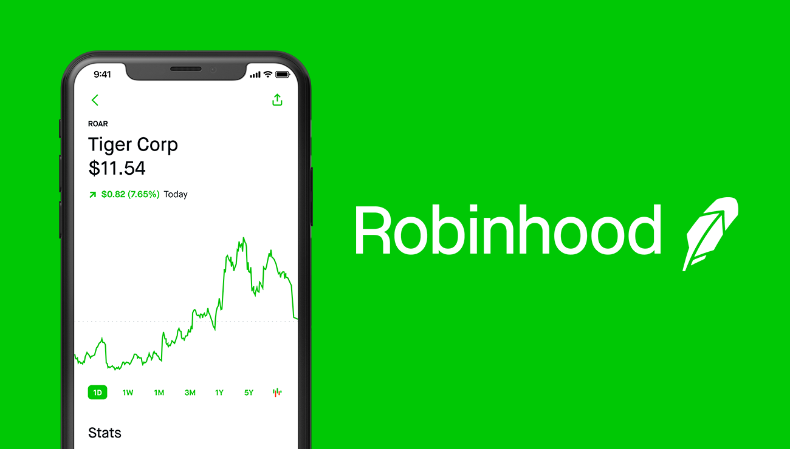
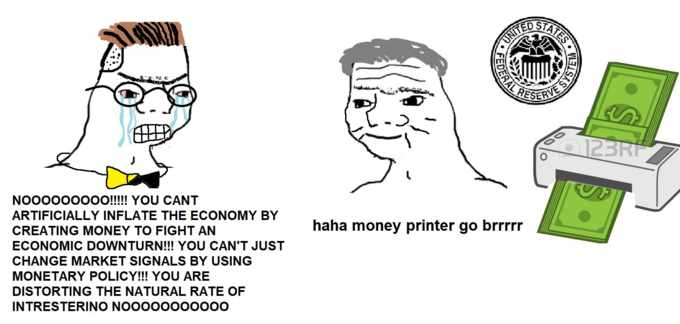

Stonks
Stocks and meme culture.
There is no shortage of internet gurus trying to tell you what you need to do in order to be successful in the stock market, “forex”, and cryptocurrencies like bitcoin. There are plenty of people who are peddling get-rich-quick schemes on YouTube, and the r/wallstreetbets subreddit is filled with thousands of successful and unsuccessful people who become internet legends. The stock market meme culture is something that has really taken the internet and mainstream business media by storm.
What is the stock market?
The stock market is where investors connect to buy and sell investments — more commonly stocks, which are shares of ownership in a public company. Just like when you need groceries you go to the supermarket, when you want to buy stocks you can buy them online using a brokerage account. The popular platform of choice for Millennials and Generation Z is Robinhood, an easy-to-use platform that makes the stock market and trading less convoluted than its more involved counterparts. Using this brokerage account you can buy and sell securities (tradable financial assets) in the public market of your choice (more information on the investments you can make here).
What Robinhood did was revolutionary — it democratized finance for everyone and finally gave everyone who has access to a phone in the United States the ability to enhance their financial goals.

Democratizing Finance.
Robinhood taking the step to democratize finance is what helps to make finance available to the regular folk. Finance is no longer something that the wealthy one percent and people on “Wall Street” have access to. We now hold the power in the palms of our hands to achieve our financial goals. Finance is finally “popular.”
The word “democratize” is slightly ironic in the scope of the United States in the sense that democracy is a synonym to “give everyone a say.” Although that is exactly what the United States is failing to do through the electoral college system, Robinhood is giving all people the option to pursue their financial goals regardless of where they come from, or their connections.
Where does meme culture come in?
We first have to define what a meme is (for those of you who do not know and/or have been living under a rock).
meme (noun): “an element of a culture or system of behavior that may be considered to be passed from one individual to another by nongenetic means, especially imitation.”
Memes have taken the internet and instant message inboxes of Generation Z and Millennials by storm. Memes are what we use to communicate shared affirmations and disappointments with one another. Chances are that you have more than likely seen a meme within the past week because they're so popular and a part of our lives now. When memes are associated with a subject, there is a specific subset of individuals who care about that trend, and are trying to either popularize or make a mockery out of it. In any subject where there is a strong meme culture, it most definitely exacerbates the popularity of said subject. The stock market and finance are no different.

Memes have helped to bring attention to shared experiences that communicate pain, happiness, and excitement; these are feelings that are often experienced when inexperienced traders make high-stakes “YOLO” trades that can either make you a lot of money or lose 100% of your underlying investment. The point is that even meme culture is evidence that the idea and concept of finance is popularized, and that drives “Wall Street” investment moguls crazy. The inexperienced independent investor is now a major player in the U.S. stock market, accounting for 19.5% of purchases within the first 6 months of 2020. Well-known figures in the finance world like Jim Cramer are baffled by the sheer unpredictability of nearly 20% of the market. I view this as a good thing. It is time for individuals to finally take control of their future, instead of the elites deciding for them. Every person matters, every voice matters, and this is what finance and the world is moving towards.
Get Involved!
I am by no means a financial advisor, but if you are interested in joining, finding out more about personal finance, or investing on Robinhood or other platforms, use my referral links.
Robinhood
Get free stock when you join (great for starting off!).
Webull
Get free stock after depositing $100 into your account when you join (my personal favorite, but a little intimidating).
Sources
Ganti, Akhilesh. “Foreign Exchange Market Definition.” Investopedia, 8 Nov. 2020, www.investopedia.com/terms/forex/f/foreign-exchange-markets.asp.
O'Shea, Arielle. “What Is the Stock Market and How Does It Work?” NerdWallet, 6 Oct. 2020, www.nerdwallet.com/article/investing/what-is-the-stock-market.
Osipovich, Alexander. “Individual-Investor Boom Reshapes U.S. Stock Market.” The Wall Street Journal, Dow Jones & Company, 31 Aug. 2020, www.wsj.com/articles/individual-investor-boom-reshapes-u-s-stock-market-11598866200.